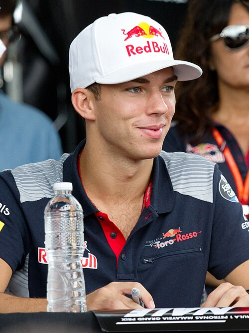
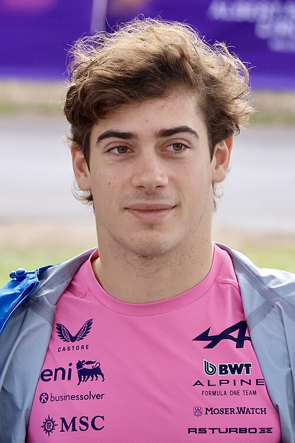

Semana de GP
 GP de Las Vegas
Neón violeta en el Strip
Faltan 5 días
GP de Las Vegas
Neón violeta en el Strip
Faltan 5 días
Enstone ha ganado mundiales con tres identidades distintas. Alpine empezó como marca deportiva de Renault y busca su lugar entre la nostalgia de los títulos y un reglamento que no le acaba de encajar.


La fábrica de Enstone fue Benetton (títulos en 1995), Renault (2005-06) y Lotus antes de vestirse de Alpine en 2021.
El azul francés en la fábrica con más historia del paddock.
La factoría arranca como Jordan Grand Prix.
Schumacher da a Enstone su primer título de constructores.
Alonso encadena dos mundiales con el R25 y el R26.
Renault rebautiza el equipo con los colores de su marca deportiva.
El equipo abandona el motor propio y pasa a cliente de Mercedes.
3 titulares detectados automáticamente esta semana.